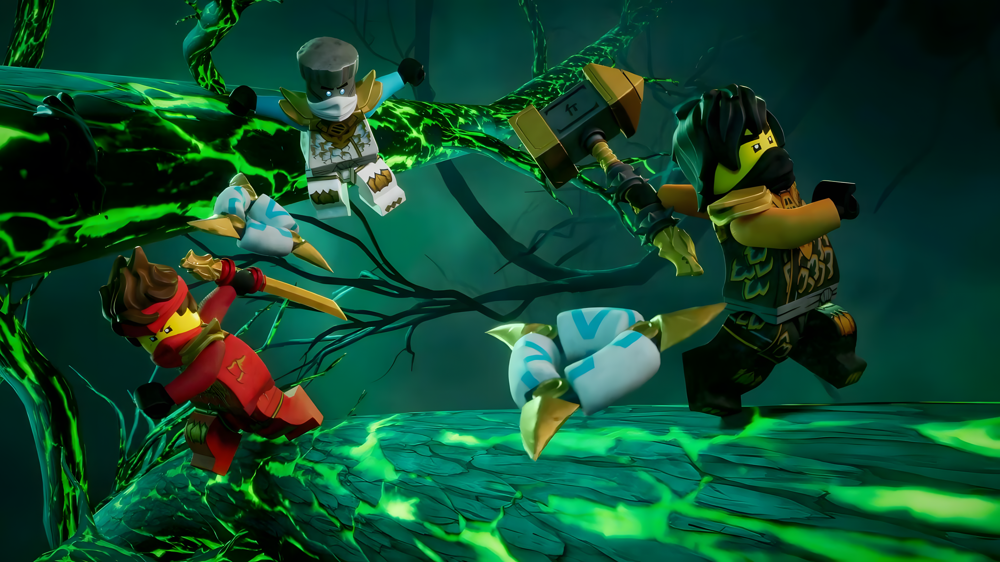

Better than fandom.
Built by Ninjago fans, for Ninjago Fans.
Loading today's picks…
Lloyd
Kai
Jay
Cole
Zane
Nya
Sensei Wu
Garmadon
Pythor
Overlord
Ace
Acid Monsters
Acidicus
Acona
Acronix
Adam
Adara
Admin Droid
Administration Agents
Adventure-Ready Woman
Akita
Albert
Alfonzo Frohicky
Alfonzo Frohicky's mother
Algae farmers
Algu
Anacondrai
Anacondrai Cultists
Anacondrai generals
Anacondrai serpent
Andrea Thomson
Andrew
Androids
Angler
Angler Goon
Announcer
Anthony Brutinelli
Antonia
Apprentice Male
Arc Dragon of Focus
Arc Dragon of Life
Arc Dragons
Arccrack
Arcturus
Argus
Arin
Arkade
Army of Shintaro
Arrakore
Aru
Asa
Ash
Asimov
Aspheera
Aspheera's cellmates
Astro parasites
Atta the Ratta
Attacker bots
Attila
Auto
Avatar Harumi
Avatar Pink Zane
Avatars
Bahn
Baker
Balee
Ballistic Missiles
Balun
Bandit
Bank Boss
Bansha
Barracudox
Barry
Battle Mechs
Bears
Beatrix
Beavers
Bees
Beetle warriors
Ben Shephard (character)
Benny
Benthomaar
Benton
Beohernie
Beta Jay 137
Betsy
Betsy's baby
Bezar
Big Dan
Big Han
Bill
Bizarro Cole
Bizarro Jay
Bizarro Kai
Bizarro Zane
Blacktron Fan
Blade Knight
Bladvic
Blake Donovan
Blazey H. Speed
Bleckt
Blizzard Archers
Blizzard Samurai
Blizzard Sword Masters
Blizzard Warriors
Blue Dragon
Blunck
Boa Destructors
Boat Vendor
Bob (The LEGO Ninjago Movie)
Bob Rattlebottom
Bob the Intern
Bob-Bob
Bolobo
Bolsen
Boma
Bone collectors
Bone Guards
Bone Hunters
Bone King
Bone Knights
Bone Scorpions
Bone Scorpios
Bone Warriors
Bonepickers
Bonezai
Bonnie
Bonzle
Boreal
Borg Store Employee
Brad Tudabone
Bragi Schut (character)
Brayden Nelson (character)
Bridge Warriors
Brillies
Bron
Brook
Brutal Debbie
Buck Buck
Bucko
Buffer
Buffmillion
Bunch
Bunchu
Burnt Generals
Business Woman
Butchie
Bytar
Captain (Dragons Rising)
Cardinsto
Caregiver bot
Carradi
Castaway
Cathy
Cats
Cave Snake
Cece
Cecil Putnam
Centipede monster
Chad
Chamille
Chan Kong-Sang
Char
Charlie
Checkout Girl
Chen
Chew Toy
Chickens
Children of the Wolf
Chip C. Rumble
Chironograx
Chironograx's clan
Chokun
Chompy
Chope
Chopov
Chopper Maroon
Chris
Christina
Chrome Domes
Chuck
Chuck (Wu's Teas)
Cinder
Circus Clown
Claire
Clancee
Claw Generals
Claw Hunters
Cliff Gordon
Clouse
Clutch Powers
Clutch Powers' interns
Coast Guard
Cobra Mechanics
Coconut copy
Cole (The LEGO Movie)
Cole (The LEGO Ninjago Movie)
Cole's family
Colin
Collins
Colossus
Constrictai
Construction workers
Cook
Cooper
Corrupted Ones
Council of Sources
Council of the Crystal King
Courthouse civilian
Cowler
Cows
Crab monster
Crabbed beast
Crabby
Crag-Nor
Cragger
Cruel Lord
Cruel Lord's guards
Crusher
Crusty
Cryptor
Crystal army
Crystal Warriors
Crystal zombies
Cyber Dragons
Cyber Giant
Cyclops Gary
Cyclopses
Cyren
Cyrus
Cyrus Borg
Daddy No Legs
Daidan
Daidan's child
Daidarabotchi
Dale
Dan (inmate)
Dan (security guard)
Dan and Kevin Hageman (characters)
Dan Daniels
Dan Vaapit
Dangerbuff clan
Dareth
Dark Samurai
Darkley's students
Death Wasps
Dee-Jay 81
Delara
Delphee
Delphee's mother
Demolition Ace
Denholt
Denza
Destiny's Bounty pirates
Devonians
Dillon
Din
Dire Bats
Djinjagan Dragons
Djinns
Dogs
Dogshank
Dojo Kid
Dolphins
Dom de la Woosh
Dorama
Dorama's stagehands
Doubloon
Doves
Dr. Julien
Dr. LaRow
Dragon critters
Dragon Hunters
Dragon keeper
Dragon Mechs
Dragonhead
Dragonian Hunting Party
Dragonian Scouts
Dragonian Tourist
Dragonian Trackers
Dragonian Warriors
Dragonians
Dragonides
Dragons
Dragons of Fallen Leaves
Dragons of the Northern Spiral
Dream Chasers
Dream-Guyvers
Drix
Ducks
Dusk
Dwayne
Earth Dragons (Core)
Earth Dragons (First Land)
Earth Monsters
Echo Zane
Ed
Ed (The LEGO Ninjago Movie)
Edna
Edna (The LEGO Ninjago Movie)
Eels
Egalt
Egon the Extraordinary
Eileen
Electro-Cobrai
Elemental Alliance
Elemental Cobras
Elemental Fighters
Elemental Master of Kismet
Elemental Master of Portals
Elemental Master of Shockwave
Elemental Masters
Elemental Monsters
Eliminators
Ellie
Elway
Emcee
Emperor of Ninjago
Empire Dragon
Empress of Ninjago
Engelbert
Etha
Euphrasia
Evil ninja
Eyezor
Faith
Falcon's mate
Fang Mouths
Fang-Suei
Fangdam
Fangfish
Fangpyre
Fangtom
Farbissina
Fast Chickens
Fear Factor
Fedulian
Feisty
Fenwick
Finders
Fire Dragon (Core)
Fire Dragon (Dragons Rising)
Fire Dragon Tribe
Fire Dragons (First Land)
Fire eater
Fire Fang
Fire Fiends
Fire Master
Fire Monsters
Fire spiders
First Master of Ice
First Mate
First Spinjitzu Master
First Spinjitzu Master's guardians
Firstbourne
Fish
Fisherman
Flame
Flameheart
Fleetwood Mech
Flerry McFloyster
Flintlocke
Fluffy
Forbidden Five
Forest Dragons
Formling Leader
Formlings
Four Eyes
Frak
Frak's mother
Frakjaw
Francis
Fred Finely
Freya
Fritz
Frost-bite
Fuchsia Ninja
Fuchsia Ninja (The LEGO Ninjago Movie)
Fugi-Dove
Fugi-Dove's brother
Fungus
Fuzz
Gahrann
Gamer Geek
Gandalaria
Garmadon (The LEGO Ninjago Movie)
Garpo
Gayle Gossip
Geckle paperworkers
Geckles
Gene
Genn
Geo
Geotomic Rock Monsters
Gertrude
Ghost Dragons
Ghost Warriors
Ghosts
Ghouls
Ghoultar
Ghurka
Giant piranhas
Giant scorpion
Giant spiders
Giant Stone Warrior
Gimon-Ogu
Gingerbread Man
Ginkle
Gleck
Gliff
Glutinous
Gnippo
Goats
Golden Ninja (Reimagined)
Golden Vipers
Gong & Guitar Rocker
Gorge
Gorzan
GPL Tech
Grab-Barg
Grand Inquisitor
Gravis
Great Devourer
Great White
Green Forest Dragon
Green Ninja
Green Screen Gary
Greenbone Leader
Grief-Bringer
Griffin Turner
Grimfax
Grimfax's advisor
Grimkeepers
Grimtak
Grimwolves
Gripe
Groko
Grouce
Guide Parrot
Gulch
Gus
Gus (mechanic)
Guy
Gweeg
Hackler
Hageman
Hai
Hailmar
Ham
Hammer Head
Hana
Hantro
Harumi
Harumi's parents
Hayley Wolfe (character)
Hazza D'ur
Heatwave
Henchmen
Henjamin
Henry
Henry (yak)
Hermes
Hibernus
Hibiki
Hiroshi
Hiz Shadoh
Horned Cat Tribe
Hostess
Hounddog McBrag
Howla
Humans
Hunter No. 29
Hutchins
Hyper-Sonic
Hypno Vipers
Hypnobrai
Ice Behemoth
Ice Birds
Ice Dragons (Core)
Ice Dragons (First Land)
Ice Emperor (NPC)
Ice Emperor (Spinjitzu Virtues)
Ice Fishers
Ice Monsters
Ignacian Villagers
Imperial Sludge
Imperians
Imperium Guard Commanders
Imperium Guards
Imperium Teen Resistance Force
Indi
Insect Master
Intelligent George
Iriel
Iron Baron
IT Bat Nerd
Ivy Walker
Izzie
Jack the Rabbit (character)
Jacob Pevsner
Jake
Jake (The LEGO Ninjago Movie)
Jake's parents
Jamanakai Villagers
Jan
Janet
Jay (The LEGO Movie)
Jay (The LEGO Ninjago Movie)
Jay Vincent (character)
Jay's family
Jaybird 64
Jaywalkin 238
Jean-Paul van Bamm
Jedd
Jeffy
Jelena
Jelly
Jellyfish
Jenny
Jeremiah Bobblestein
Jesper
Jet Jack
Jimmy
Jin
Jiro
Joey
Johnny
Johnny Courageous
Jolly
Jordana
Joshua Deck (character)
Juggernaut
Julien family
Jungle Dragons
Jungle insects
Juno
K.R.E.E.L.
Kabuki
Kai (The LEGO Movie)
Kai (The LEGO Ninjago Movie)
Kai and Nya's family
Kaito
Kalmaar
Kapau
Karenn
Karit
Karlof
Kataru
Kate Garraway (character)
Kebaber
Keepers
Kenji
Kenzo
Khanjikhan
Killow
Kirchonn
Kizzy
Klirba
Knuckles
Koji
Koko
Komala
Konrad
Korgran
Korgran's father
Kozu
Krag
Krait
Krazi
Kreel
Kruncha
Krux
Kryptarium inmates
Kuma
Kung Fu Cook
Kur
Kwon
Lan
Lar
Large dragons
Larry
Lasha
Lauren
Lauren's groom
Lava Dragons
Lava Monsters
Lava-Tide Leader
Lava-Tides
Lava-Todd the Wise
Lava-Tony
Lava-Tony's sous-chefs
Laval
Laval (The LEGO Ninjago Movie)
Lead Loyalist
Leaf Blade
League of Jay
Lee
Lee (Lee's Supplies)
Legendary Dragon
Leo
Leroy
Levi
Leviathans
Levo
Libber
Life Dragons
Light Dragons
Lightning Dragon Mother
Lightning Dragons (First Land)
Lightning-Tide Defense
Lightning-Tide Prosecutor
Lightning-Tides
Lilly
List of characters
List of Ninjago cast and characters
List of Ninjago: Dragons Rising cast and characters
List of unseen characters
Living Diamonds
Lizaru
Lloyd (The LEGO Movie)
Lloyd (The LEGO Ninjago Movie)
Lloyd's family
Lobbo
Logan
Lokko
Lou
Loyalists
Lu
Luke Cunningham
Lumberjacks
M4U-R1C3
Maaray Guards
Maaray Soldiers
Machia
Maggie
Magic-Tides
Magician
Main Guard
Mambo V
Mambo's advisor
Mammatus
Mammatus' ancestor
Manram
Manta rays
Marcus
Mariano
Marla
Martin
Mary Louise's captain
Mascots
Mask of Malice
Master of Gluing
Mateo
Matriarch of Fallen Leaves
Matriarch of the Mountain Dragons
Max
May Robsen
Maya
Mayor's Advisor
Mazu
Medical Bots
Megan
Mei
Melvin
Menkes
Meowthra
Merlopians
Messenger Dragons
Metal Rascal
Metalonians
Mezmo
Mezmo Junior
Michael Kramer (character)
Michael Strahan (character)
Mike Boom
Mikloshe
Milton Dyer
Min
Min-Droid
Mina
Mindaro
Ming
MiniPix
MiniPix Seven
Minos
Misako
Miss Demeanor
Mister F
Mister Whiskers
Model Shop Owner
Moe
Mogra
Mohawk
Monkey Wretch
Monks
Monster insects
Monster lion
Monster pig
Monster Skull
Monster sushi
Monsters
Moody
Mord
Morro
Motorcycle Mechanic
Mountain Dragons
Mr. Abel
Mr. E
Mr. Fussly Fussly
Mr. Pale
Mr. Righty Tighty
Mr. Wise
Mrs. Abel
Mrs. Castillo
Mrs. Dyer
Mrs. Park
Mrs. R
Mrs. Uchida
Ms. Laudita
Mucoids
Mud monsters
Mud newts
Mud-Chief
Mud-Tide Warrior
Mud-Tides
Munce Sentries
Munce Warriors
Murt
Murtessa
Museum Curator
Mutation Monsters
Muzzle
Mystake
Mystery Dust
N-POP Girl
Nadakhan
Nails
Nancy
Neido
Nelson
Neuro
New Ninja
Newbie Gamer
News Reporter
Niall
Night Hunter
Night Terrors
Night Watchman
Nightmare creatures
Nightmare King
Nightstryk
Nimbus
Nindroid Army
Nindroid Drones
Nindroid Sentries
Nindroid Warriors
Nindroids
Nineko
Ninja
Ninja Replacements
NinjaFanInfinity
Ninjago (sets)/Minifigures
Ninjago City Council
Ninjago City's former mayor
Ninjago City's mayor (The LEGO Ninjago Movie)
Ninjago Police
Ninjago soldiers
Ninjago Wildlife
Nitro
Nived family
No-Eyed Pete
Noble
Nobu
Nobu (Spinjitzu Smash!)
Nokt
Nomis
Noonan
NPCs
Nuckal
Nya (The LEGO Ninjago Movie)
Nyad
O'Doyle
Obachan
Obscuria
Ocean gang
Ocean gang leader
Octopus
Octopuses
Okino
Old Guard
Old Lady Dragonians
Old Man Jiro
Olivia
Omar
Oni
Orange Ninja
Order of Felis
Order of the Sources
Original Master of Amber
Oroku
Otto Pilot
P.I.X.A.L.
Pace Dragons
Panda Suit Guy
Paperboys
Partygoer
Pat
Patriarch of the Northern Spiral
Patty Keys
Pebbles
Penny Saunders
Percy Shippelton
Peri
Pet dragon
Phantom Ninja
Phil
Pilates Studio Owner
Pilly-Wig
Pink Ninja
Pitch
Plovar
Plundar
Pokee
Police Commissioner
Police Officer
Pontifex Magicus
Postman
PoulErik
Powerlid
Prentis
Prison guards
Private Puffer
Puffer
Puppets
Purple bog frogs
Pyro Destroyers
Pyro Slayers
Pyro Vipers
Pyro Whippers
Pyrrhus
Python Dynamite
Quanish the Elder
Quartet of Villains
Quealiches
Queen of Monsters
Queen of the monster insects
Rabbits
Rachel Sparrow
Radio DJ
Raggmunk
Ramirez
Rapton
Ras
Ras' master
Rats
Rattla
Ravtures
Ray
Ray (The LEGO Ninjago Movie)
Re-Awakened
Recon Nindroid
Red
Red 27
Red 29
Red Crows
Red Vipers
Red Visors
Reflectra
Reginald Slitherbottom
Renzo
Repo Man
Restaurant Owner
Restaurant Worker
Retirement General
Rice farmers
Richie
Ripper Sharks
Ritchie
Rivett
Riyu
Roake Fengxian
Robin Roberts (character)
Robo Usher 3000
Robot Manager
Roby
Rocky
Roderick Allen
Rodrigo
Rogon
Roise
Ronin
Rontu
Ross
Rotten Rabbits
Rowan Rockspine
Rox
Royal Family of Imperium
Royal Family of Merlopia
Royal Family of Ninjago
Royal Family of Shintaro
Royal Guards
Royal house of Djinjago
Rufus McCallister
Rumble Keepers
Runde
Runje
Runme
Rusty
Saeko
Sage
Sage Master
Sally
Sally (student)
Sally's parents
Sally-Bob
Sam
Sammy
Samukai
Samurai warrior
Sand eels
Sand warriors
Santa Claus
Satsue
Sawyer
Scar the Skullbreaker
Scoop
Scooter
Scott
Scott Decoteau (character)
Scroll-Worms
Sea lions
Seafoam Green
Seagulls
Security Bots (Kreel's Junkyard)
Security Bots (Temple City)
Security guards (Borg Industries)
Security guards (Explorer's Club)
Security guards (Ninjago City)
Seliel
Seliel's father
Selma
Sentry General
Serpentine
Serpentine generals
Seven Deadly Butterflies of Shaolin
Severin Black
Shade
Shadow Army
Shadow Banshees
Shadow Dragons
Shadow Garmadon
Shadow Minions
Shadow Wu
Shard
Shark Army
Shark Army Gunner
Shark Army Thug
Sharkeesha
Sharkizuki
Sharks
Shen
Shen-Li
Shezada
Shifty
Shin
Shintaran Ridgebacks
Ship Captain
Shohei
Shu
Simon
Sir Chomps-A-Lot
Skales
Skales Jr.
Skalidor
Skeleton Army (The LEGO Ninjago Movie)
Skeleton figurehead
Skids
Skinnet
Skip Vicious
Skreemers
Skulkin
Skulkin robots
Sky Folk
Sky Pirates
Skylor
Skylor's mother
Slab
Slackjaw
Sleven
Slithraa
Slug Merchants
Slugs
Sly Vipers
Smith Daryll
Smoke creatures
Smythe
Snake Army
Snake villain
Snake warriors
Snakes
Snappa
Sneak
Sneaky Snakes
Snickers
Snike
Snivel
Sono
Sons of Garmadon
Soon
Sora
Sora's parents
Sorla
Soto
Soul Archer
Source Dragon acolytes
Source Dragon of Balance
Source Dragon of Energy
Source Dragon of Flow
Source Dragon of Focus
Source Dragon of Life
Source Dragon of Motion
Source Dragon of Strength
Source Dragons
Sparky
Spectral Dragonians
Sphinxes
Spider Hacker
Spiders
Spin Harmony
Spinjago Citizen
SpinjitzuForDays99
Spirit Dragons
Spirit of the Temple
Spirits
Spitta
Spitz
Spokes
Spyder
Spykor
Sqiffy
Squirrels
SsssSsss Underwood
Starteeth
Steve
Stone Army
Stone Guardians
Stone Hawk
Stone Scouts
Stone Swordsmen
Stone turtles
Stone Warriors
Stormbringer
Stormbringer's baby
Stranded ninja
Strangle Weed
Street Vendor
Strike
Stuart the Mildly Wonderful
Successful Samurai
Suetonius
Susan
Sushi Chef
Sushimi
Sushimi Chef
Sushimi's sushi chefs
Suzie Wheeler
Swamp rats
Sweep
Sweeper
Tai-D
Takanagi
Takuma
Talon
Tanabrax
Tannin
Tarcila
Targle
Tea Vendor
Teal Ninja
Teelk
Ten-Speed
Tentacled beasts
Terri
The Administrator
The Beast
The Chroma
The Fold (characters)
The Grays
The Mechanic
The Milk Man
The Needles
The Ninjagos
The Omega
The Overlord
The Preeminent
The Resistance (Crystalized)
The Resistance (Hunted)
The Resistance (Imperium)
The Resistance (Never-Realm)
The Rolling Bones
The Royal Blacksmiths
The Wu
Thunder Dragon
Thunder Keepers
Thunderfang
Tide-Folk
Tiger Widows
Tigers
Time Ninja
Time Twins
Tito
Tommy
Tommy (student)
Tommy (The LEGO Ninjago Movie)
Tommy Andreasen (character)
Tony
Tope-Epot
Toque
Torben
Torex
Tour Guide
Tourist Kid
Tourist Kid's parents
Tox
Toxic Vipers
Training dummy
Translucent Blue Viper
Translucent Orange Viper
Translucent Purple Vipers
Treble Makers
Treehorn queen
Treehorns
Treg
Trexxs
Trimaar
Trimaar's ancestor
Tween Lloyd
Twitchy Tim
Two Moon Village Commandos
Two Moon villagers
Tyr
Uchida
Ultra Dragon
Ultra Violet
Ulysses Trustable
Ume
Unagami
Unagami's army
Undead Mino
Underhill
Unknown Elemental Master (Geckle)
Unknown Elemental Master (Greenbone Warrior)
Unknown Elemental Master (Hypnobrai)
Upply
Urd Leatherwing
Uthaug
Vangelis
Vania
Vastodectrus Venemous
Vengestone Brutes
Vengestone Guards
Vengestone seller
Vengestone Warriors
Venomari
Vermillion
Vermin
Vex
Vinny Folson
Violet
Viper Flyers
Vipers
Vlad Tutu
Wail
Wallopers
Warby
Warriors of Felis
Water Dragon (Core)
Water Dragons (Dragons Rising)
Water-Tides
Whack Rats
Whales
Whiplash
Whoosh
Wild Bill TickTock
Will
William Toughbutt
Wind Dragons
Winged monkeys
Wisp
Wizard Guard
Wizards
Wojira
Wolf Clan
Wolf Mask General
Wolf Mask Guards
Wolf Mask Warriors
Wolf warriors
Wolves
Wooo
Workshop Mechanic
Wrayth
Writers of Destiny
Wu (The LEGO Ninjago Movie)
Wu and Garmadon's parents
Wu's Academy students
Wu's chicken
Wu's dog
Wyldfyre
Wyldfyre's family
Wylie
Wyplash
Xerot
Yaks
Yana
Yang
Yang's students
Yello Beez
Yellow Ninja
Yeti
YinYang Dragons
Yokai
Young Lloyd
Z-Blob
Zaiden Kane
Zane (The LEGO Movie)
Zane (The LEGO Ninjago Movie)
Zane's Mino
Zant-Tanz
Zanth
Zarkar
Zarkt
Zeatrix
Zian
Zilvar
Zippy
Zippy's uncle
Zoey
Zoltar
Zugu
Zur
Zuri